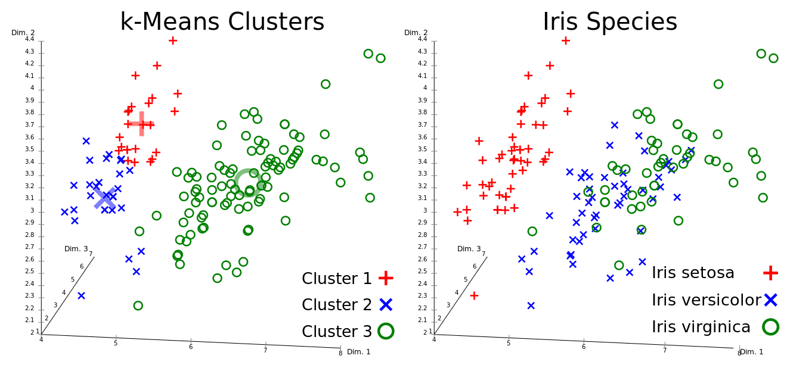

10 Custering methods
Clustering methods are used to group data when no class labels are present. You thereby want to learn an intrinsic structure of the data.
11 Evaluation of clustering algorithms
11.1 Silhouette coefficient
The silhouette coefficient compares the average distance of a point and the points in its own cluster d(x,\mu_{C}) to the average distance between the point and and the points of the second nearest Cluster d(x,\mu_{C'}).
s(x) = \frac{d(x,\mu_{C'})-d(x,\mu_{C})}{\max(d(x,\mu_{C}), d(x,\mu_{C'}))} where C is the own cluster and C' is the second nearest cluster. If a point is clearly in its own cluster, s(x) is close to 1. If a point is between two clusters, s(x) is close to 0. If a point is closer to another cluster, s(x) is negative.
By varying the number of clusters, one can find the number with the highest silhouette coefficients.
Pros:
- The score is high for dense and highly separated clusters.
Cons:
- The silhouette coefficient is mainly suitable for convex clusters, since it gives high values to this kind of clusters.
from sklearn.metrics import silhouette_score
from sklearn.cluster import KMeans
clu = KMeans(n_clusters=4)
clu.fit(X)
labels = clu.labels_
silhouette_score(X, labels, metric='manhattan')More info: scikit-learn.org
A faster alternative is the Davies-Bouldin score, where values closer to 0 indicate a better clustering.
11.2 Adjusted mutual information score
If you have labelled samples, you can use the mutual information score to test if the classes correspond to your clusters. The adjusted mutual information score adjusts for chance.
from sklearn.metrics import adjusted_mutual_info_score
adjusted_mutual_info_score(Y, clusters)12 K-Means Clustering
Goal: Divide data into K clusters so that the variance within the clusters is minimized. The objective function:
V(D) = \sum_{i=1}^k \sum{x_j \in C_i} (x_j - \mu_i)^2, where V is the variance, C_i is a cluster, \mu_i is a cluster mean, x_j is a datapoint. The algorithm works as follows:
Assign the data to k initial clusters.
Calculate the mean of each cluster.
Assign the data points to the closest cluster mean.
If a point changed its cluster, repeat from step 2.

{kind=link}
from sklearn.cluster import KMeans
kmeans = KMeans(n_clusters=4)
kmeans.fit(X)
kmeans.predict([[5, 1]])More info: scikit-learn.org
A faster alternative is mini batch K-Means.
13 Graph-Based Clustering
You represent data set D as a graph G=(V,E) and divide it up in connected sub-graphs that represent your clusters. Each edge e_{ij} (between nodes v_i and v_j) has a weight w_{ij} (which is commonly a similarity or distance measure).
13.1 Basic Graph-Based Clustering
The basic algorithm works like this:
Define a weight-threshold \theta.
For all edges: if w_{ij} > \theta: remove e_{ij}.
If nodes are connected by a path (found via depth first search): Assign them to the same cluster.
13.2 DBScan
Density-Based Spatial Clustering of Applications with Noise is a more noise robust version of basic graph-based clustering. You create clusters based on dense and connected regions. It works like this:
A point is a core point if at least \text{minPts} are within a radius of \epsilon of the point (including the point itself).
A point is directly reachable if it is not a core point but within \epsilon from a core point.
All other points are not part of the cluster (and may not be part of any cluster).
! For points between clusters, the assignment to a cluster depends on the order of point assignments.
from sklearn.cluster import DBSCAN
dbscan = DBSCAN(eps=3, min_samples=4)
dbscan.fit(X)More info: scikit-learn.org
There is a newer version of this algorithm (Hierarchical DBSCAN), that allows for clusters with varying density, more robustness in cluster assignment and makes tuning \epsilon unnecessary.
13.3 Cut-Based Clustering
You introduce a adjacency/similarity matrix W (measures similarity between data points) and define the number of clusters k. You now try to minimize the weight of edges \kappa between the clusters C (equal to cutting edges between nodes that are least similar):
\begin{aligned}
\begin{split}
\min \frac{1}{2} \sum_{a=1}^k \sum_{b=1}^k \kappa(C_a, C_b) \\
\text{where } \kappa(C_a, C_b) = \sum_{v_i \in C_a , v_j \in C_b , a \neq b} W_{ij} \\
\text{ and } \kappa(C_a, C_a) = 0
\end{split}
\end{aligned} \rightarrow You only add up the similarities/edge-weights between your clusters (but not within your clusters).
For constructing the similarity matrix, different kernels can be used (commonly the linear kernel or the Gaussian kernel).
13.4 Spectral Clustering
Spectral clustering works by non-linearly mapping the matrix-representation of the graph onto a lower-dimensional space based on its spectrum (set of eigenvectors) and group the points there. The mapping preserves local distances, i.e. close points stay close to each other after the mapping. It employs three steps: Preprocessing, decomposition and grouping.
Preprocessing
We create a Laplacian matrix L (Laplacian operator in matrix form, measuring how strongly a vertex differs from nearby vertices (because the edges are similarity measures)): L = D - W D_{ij} = \begin{cases} \sum_{j=1}^N W_{ij} \\ 0 \text{ if } i \neq j \end{cases} where D is the degree matrix (the (weighted) degree of each node is on the diagonal) and W is the adjacency/similarity matrix (measures similarity between data points).
Decomposition
You first normalize the Laplacian to avoid big impacts of highly connected vertices/nodes. More info on the calculation on wikipedia.org.
We make eigenvalue decomposition:
L U = \Lambda U \quad \rightarrow \quad L = U \Lambda U^{-1}
where U is the matrix of eigenvectors and \Lambda is the diagonal matrix of eigenvalues. You can now find a lower-dimensional embedding by choosing the k smallest non-zero eigenvalues. The final data is now represented as a matrix of k eigenvectors.
Grouping
You have multiple options:
You can cut the graph by using the chosen eigenvectors and splitting at 0 or median value.
You get the final cluster assignments by normalizing the now k-dimensional data and applying k-means clustering to it.
from sklearn.cluster import SpectralClustering
scl = SpectralClustering(n_clusters=4,
affinity='rbf',
assign_labels='cluster_qr', # assigns labels directly from Eig vecs,
n-jobs = -1)
scl.fit(X)More info: scikit-learn.org
14 Sparse Subspace Clustering (SSP)
The underlying assumption of SSP is that the different clusters reside in different subspaces of the data. Clusters are therefore perpendicular to each other and points in a cluster can only be reconstructed by combinations of points in the same cluster (\rightarrow self-expressiveness, the reconstruction vectors ought to be sparse). For each point you try to find other points that can be used to recreate that point - these then form the same cluster. Doing that for all points gives you a data matrix X and a matrix of reconstruction vectors V:
X = X*V\text{ s.t. diag}(V)=0.
You now try to minimize the V-matrix according to the L1-norm (giving you a sparse matrix). This matrix can then be used for e.g. spectral clustering.
More details in the original paper on SSC-OMP.
from cluster.selfrepresentation import SparseSubspaceClusteringOMP
ssc = SparseSubspaceClusteringOMP(n_clusters=3,affinity="symmetrize")
ssc.fit(X)More info: github.com
15 Soft-assignment Clustering
Soft clustering assigns to each point the probabilities of belonging to each of the clusters instead of assigning it to only one cluster. This gives you a measure on how certain the algorithm is about the clustering of a point.
15.1 Gaussian Mixture Models
Gaussian mixture models try to find an ensemble of gaussian distributions that best describe your data. These distributions/components are used as your clusters. Your points belong to each cluster with a certain probability. To find these distributions, we use an expectation maximization algorithm:
Assume the centers of your Gaussians (e.g. by k-means) and calculate for each point the probability of being generated by each distribution (p(x_i \in C_k | \phi_i, \mu_k, \sigma_k)).
Change the parameters to maximize the likelihood of the data, given the cluster probabilities for all points.
The probability of a data point belonging to a cluster can be calculated via Bayes theorem.
More info on the theory: brilliant.org.
from sklearn.mixture import GaussianMixture
gm = GaussianMixture(n_components=4, covariance_type='full')
gm.fit(X)
gm.predict_proba(X)More info: scikit-learn.org
15.2 Other models
Other models also have means to calculate cluster probabilities for points. For the HDBSCAN-algorithm see here.
15.3 Hierarchical Clustering
Instead of clustering a point to only one cluster, you assign it to a hierarchy.
Pros:
- Hierarchies of clusters reflects the data set and therefore the relationship between points better.
Cons:
- It is more difficult to make clear statements of cluster membership \rightarrow define a limit for hierarchical depth
16 Artificial Neural Networks for Clustering
See chapter Neural Networks (5)